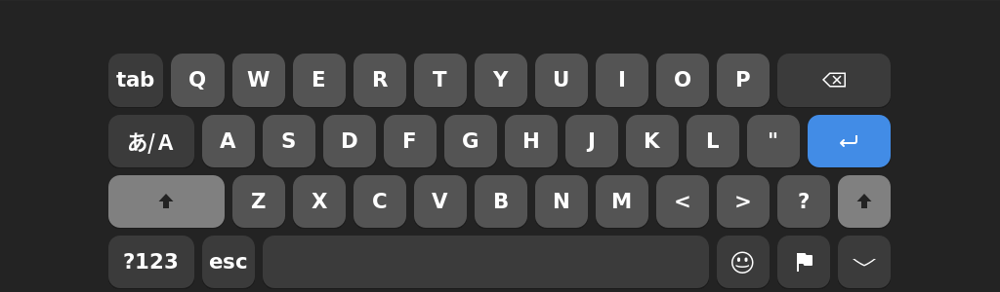
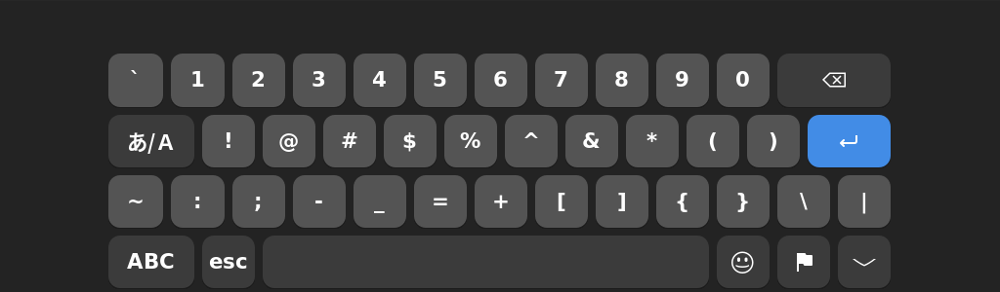
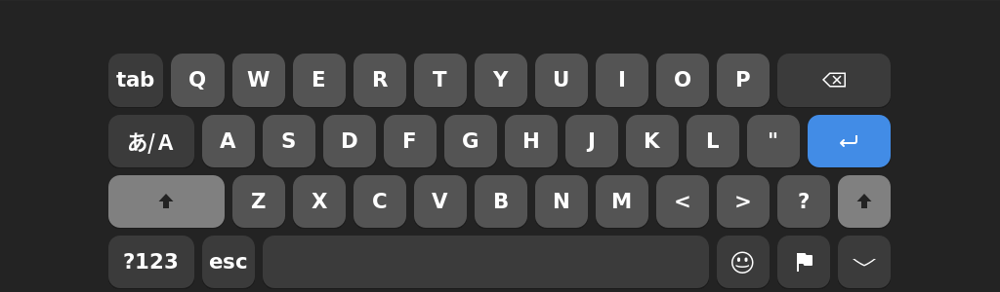
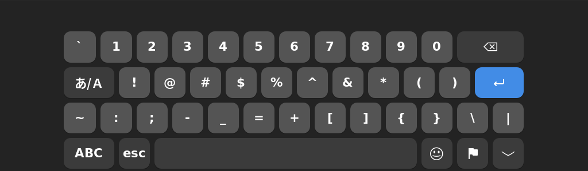
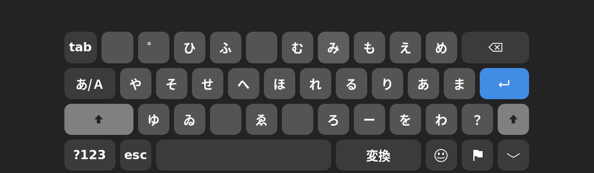
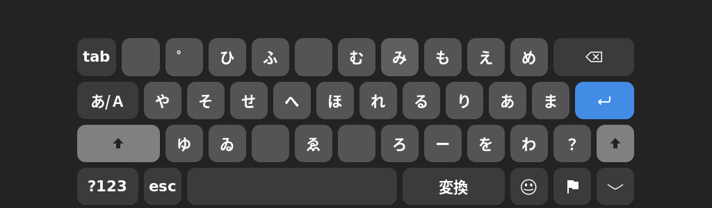
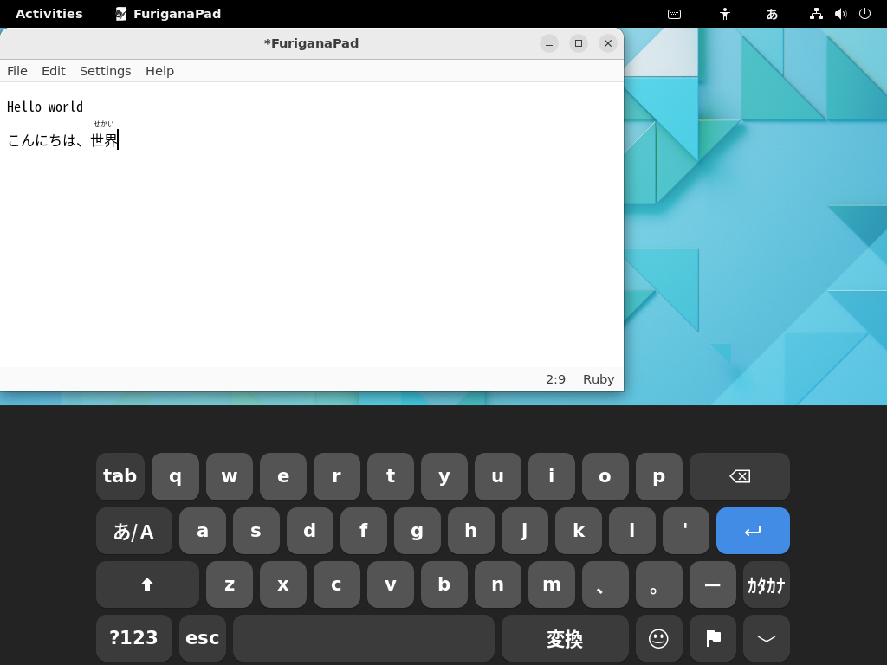
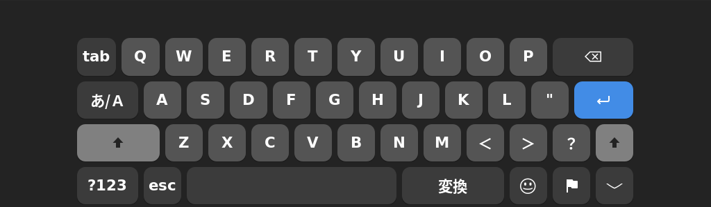

つかいかた（ひらがなIMEのとき）
※ OSKIMは「ひらがなIME」 v0.15.0 以降をサポートしています。
入力ソースをひらがなIMEにしておくと、OSKIMはひらがなIME用のオンスクリーン キーボードを表示します。ひらがなIMEの設定や入力モードによって、画面に表示されるオンスクリーン キーボードも自動的にきりかわります。
英数モード (A)
入力モードが「英数」のとき、オンスクリーン キーボードはQWERTY配列で表示されます。つかいかたはデフォルトのオンスクリーン キーボードとかわりありません。ひらがなIMEの入力モードをきりかえたいときは、あ/Aボタンをタップします。
 



ひらがなモード (あ) ／ かな入力
ひらがなIMEの文字の打ちかたを「かな(ニュー スティックニー配列)」にしていると、入力モードが「ひらがな」のとき、オンスクリーン キーボードもニュー スティックニー配列で表示されます。
スペースキーのボタンをタップすると、つぎにシフトがわの文字を１文字入力することができます。シフトがわの文字を連続して入力したいときは、⇧ボタンをタップすれば、オンスクリーン キーボードをシフトがわにロックできます。
 


ひらがなモード(あ) ／ ローマ字入力
ひらがなIMEの文字の打ちかたを「ローマ字」にしていると、入力モードが「ひらがな」のとき、オンスクリーン キーボードはQWERTY配列で表示されます。長音記号用のーボタンは、。ボタンのみぎとなりにあります。

